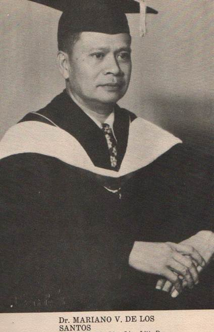

THE UNIVERSITY OF MANILA
546 M.V. Delos Santos Street, Sampaloc, Manila.
MOTTO
To acquire knowledge and skills for the benefit of mankind.
MISSION
ACE - to accomplish somothing with complete success.
A - anchor in the hearts of the youth the love of country, science and virtue.
C - create an
atmosphere of academic excellence and
competence.
E - empower the youth with moder scientific technological skills in braving the challenges of the global society.
VISION
To impart to the future generations the University of Manila trilogy of ideals: love of country, love of science and love of virtue, in making the lives of others better, brighter, lighter and more liveable by making quality education accessible to all.
UM HYMN
U.M. FOREVER
U.MI oh, U.M forever
Alma mater, dear, we hail!
We'll always wave your banner
With the glorious U.M so dear
As faithful sons, of dear U.M
We will honor you forever,
We'll cheer for you,
Always love you
Onward U. M ever hail!
On October 5, 1913, a group of four young men and a woman, with ages from fifteen to twenty-one met for breakfast at the Palma de Mallorca, a popular restaurant beside the Sto. Domingo Church in Intramuros, Manila.
The five were Dr. Apolinario G. de los Santos, his brother, Dr. Mariano V. de los Santos, his sister, Maria de los Santos, and two friends Dr. Buenaventura J. Bello and Atty. Antonio Rivero. They were only college students then, who were more daring than their contemporaries for they were determined to pursue their dream of putting up a school suited to the needs of the Filipino youth.
OThese impecunious young people, as they were called by the university historian, encountered many challenges in realizing their dream of establishing an institution whose motto was “Patria, Scientia, et Virtus. They named their school Instituto de Manila, after the city of their affection and Apolinario de los Santos was elected as the first director of the school.

These impecunious young people, as they were called by the university historian, encountered many challenges in realizing their dream of establishing an institution whose motto was “Patria, Scientia, et Virtus. They named their school Instituto de Manila, after the city of their affection and Apolinario de los Santos was elected as the first director of the school.
The doors of the Instituto de Manila were first opened in school year 1914-1915. The forerunner of this institution offered only elementary and high school courses in a leased building located at the corner of Madrid and Peñarubia streets, Binondo District. However, in school year 1919-1920, in order to accommodate its growing populace and to provide them with better facilities, the Instituto de Manila started conducting classes in its own building at the Sampaloc District.
Before embarking on a program of expansion in order to meet the educational needs of its constituency, the Instituto de Manila had to undergo internal changes. On the occasion of its eighth anniversary, the original incorporators unanimously agreed to effect a reorganization geared towards the attainment of a university status. As a result, the Instituto de Manila was re-incorporated as the University of Manila on November 3, 1921 under the provisions of Act No. 1459 of the former Philippine Legislature.
Right after its re-incorporation, the University focused on providing more course offerings for their growing clientele. The growth and expansion marked the turning point of this democratic and dynamic institution which has withstood the test of time. The University has survived two world wars and the bewildering changes in the country and of the world: ideological, social, economic, and political.
The mustard seed that was the University of Manila continues to show impressive growth and expansion. In March 1919, the College of Law was formally opened. In the following year, 1920, the College of Liberal of Arts was also opened. In 1922-1923, three colleges: College of Philosophy and Letters, College of Education, and College of Business Administration were opened while the Department of Graduate Studies was opened in 1941. In December, 1945, the College of Engineering was opened and in the following year, 1946, the Academy of Music and the School of Foreign Service were born.
The College of Law was given government recognition on November 1, 1920. It was formally incorporated into the University during the academic year 1921-1922. Barely, after two years of its founding, the College of Law caught public attention and gained popular acclaim when two of its graduates: Pablo Payawal, who later became a prominent law practitioner, and Jose Carlos, who became a judge, copped the first and second places, respectively, in the 1920 Bar Examinations.
Three years later, former Civil Service Commissioner Amado Del Rosario and Cipriano Primicias who became a majority floor leader in the defunct Senate and who was one of the vice-presidential nominees for the 1961 national elections, followed suit by garnering the second and sixth places, respectively, in the 1922 Bar Examinations. And during the three years that followed, the graduates of the College easily hurdled the Bar with 100 percent passing average. This achievement of the College was so impressive that the pre-war Tribune and Philippine Herald newspapers were all praises for the University of Manila.
In 1933, Lope Quimbo, Manuel Alvero, and Guillermo Blanco became the first, second, and tenth placers in the Bar Examinations respectively. In 1936, the College again produced another batch of topnotchers where Teodorico Martin was the sixth placer who became the Dean of the College of Law of the University of the East. Again, in 1937, Sixto Domondon copped the tenth place in the Bar Examinations. To continue, in 1938, Emmanuel Pelaez, who was to become Vice-President of the Philippines, led that year’s Bar Examinations “elite” by copping the first place. With Emmanuel Pelaez there were also two topnotchers, namely Rodegelio Jalandoni, sixth placer, and Pedro Bacerro, the seventh placer in the Bar Examinations. In 1940, the College again showed its impressive performance by having Delfin De Vera garnering the fourth place in the Bar.
During the post-war years, the College of Law reasserted its Bar supremacy by producing topnotchers. In 1948, Jose M. Evangelista, who was to become ambassador, placed second and established a record high rating of 95.04 percent. Moreover, this feat was duplicated in 1949 by Dominador R. Aytona who also captured the second place. Aytona became a vice-presidential nominee in 1961 under the Nacionalista Party banner. Two years later, in 1951, Vicente Acsay kept up the excellent performance of the College by notching the first place in the Bar Examinations. The good showing of the College continued, for in 1953, Leonardo Amores, who was to become the illustrious faculty member of the College hit the same spot with the highest rating of 95.03 percent.
Up to the present year, the College of Law graduates fared exceedingly well in the bar examinations with ratings above the national passing percentage. In 2006, the College of Law graduates obtained a 75 percent passing in the Bar Examinations, again proving the quality of education being sustained throughout the years by the University of Manila.
To show the march to progress of the University, in 1949, courses were offered in Master of Arts in Political Science in the Department of Graduate Studies, followed by the opening of Master of Arts in History and Bachelor of Science in Elementary Education in 1951. Then, from 1963 to 1966, courses in the College of Criminology and Penology, the School of Secretarial Science and the master’s degree in Public Administration were offered. On June 7, 1976, the following two-year courses were offered— in Police Science and Technology, in Library Science, and in Bookkeeping; one-year course in Hotel and Restaurant Management and one-year course in Tourism.

The sustainable growth and expansion of the University were the products of the highly innovative, creative, and brilliant minds of those who occupied the presidency. Dr. Apolinario de los Santos was the University President from its inception until 1927. His successor was Dr. Mariano V. de los Santos, who assumed the presidency at the age of 29, and it is a matter of record and source of pardonable pride that he held the distinction of being the youngest university president in the Philippines, in Asia, and in the whole world. Dr. Mariano V. de los Santos co-founded the Philippine Association of Colleges and Universities (PACU) and was elected as its President from 1938 to 1939 and from 1955 to 1958. He also co-founded the United Nations Association of the Philippines. Moreover, he is the adviser on educational matters to six Philippine Presidents: Manuel L. Quezon, Jose P. Laurel, Manuel Roxas, Elpidio Quirino, Ramon Magsaysay and Carlos P. Garcia. He was president of the University until his untimely demise on October 13, 1959.
The unfinished task of leading the University was continued by Madame Helen de los Santos, who was described by the late Dr. Mariano V. de los Santos in his book, “Education and Life” as his life partner “who has shared with me all the tribulations of life but cared little for its vainglories.” One of the pioneers in education and a compleat Filipino woman, Madame Helen de los Santos held the presidency with distinction from 1959 to 1981.

Another chapter in UM history unfolded when Dr. Virgilio de los Santos (from the second generation of the de los Santoses) took over the presidency in 1981. With him at the helm, the University continually strived to strengthen its commitment to total academic excellence. The University has remained true to its trilogy of ideals: Patria, Scientia, et Virtus.
It envisions a dynamic community that is deeply steeped in the trilogy of UM Ideals: love of country, love of science and love of virtue; fully equipped with humane, conceptual, and technological skills; firmly determined to make life for others better, brighter, lighter and more livable, by making quality education accessible to all. The Motto of the University is to acquire knowledge and skills for the benefit of mankind.
Its Mission aims to create an atmosphere of academic excellence and competence, that is, firmly anchored in love of country, science and virtue; where citizens deeply concerned and truly committed to respond to the socio-cultural, psycho-spiritual and politico-economic challenges of the contemporary Filipino community are formed; fully empowered with modern scientific technological skills with which to brave the challenges of the global society.

Under the vigilant stewardship of Dr. Virgilio de los Santos, the University has been placed to a higher level of credit and standard. In line with the thrusts of the government and to keep abreast with the demands of the modern times, on February 16, 1994, the University offered four-year courses in Hotel and Restaurant Management and Computer Science. To show further that the University of Manila has come of age and in response to the call of the 90’s, on February 21, 1994, it offered new courses in the following programs: Doctor of Education, Doctor of Public Administration, and Master of Business Administration. These programs are designed to provide administrators, businessmen, analysts, researchers, and educators with the theoretical background, values, competencies, and skills for them to be able to participate and contribute to the growth and development of a better and a more humane society.
Dr. Virgilio de los Santos as a vanguard to Philippine and Japan relations received the highest honor the Emperor of Japan can give to a foreign national; the Rising Sun Medal of Honor.
On April 3, 2003, the University was granted the government permit to offer the four-year Bachelor of Arts in Cultural Languages, major in the Japanese Language. The University of Manila is the first university in the Philippines recognized to offer a degree course in the Japanese Language.
To add to this legacy, on November 7, 2005 a new four-storey building was constructed for the International Language School (ILS). The International Language School offers courses in the English language to foreign students like the Chinese, Japanese, and Koreans. It also offered courses in the Chinese language and Nihongo (Nippongo) language. The ILS building likewise provides accommodations for foreign students while they are studying. Thus, with these developments, the leaders of the University continually strive to realize the vision and mission of the institution and, that is, academic excellence imbued with values, not only for the Filipino youth but also for those of our neighboring countries.
In 2006, Dr. Emily Dodson De Leon the Senior Vice-President and Chief Academic Officer was elected by the Board of Trustees as President of the University of Manila. In 2007, Madame President Emily Dodson De Leon became the first Vice-President of PACU (Philippine Association of Colleges and Universities).
With her dynamic administration and dauntless leadership, the University has remained to be an institution to reckon with. She is the vital mover behind the sustainable progress of the University by initiating innovations and modern strategies in promoting quality education and these are shown when the University was granted by PACUCOA a formal accredited status for the College of Education for its two programs: Bachelor in Secondary Education and Bachelor in Elementary Education and the College of Business Administration.
Likewise, The College of Hotel and Restaurant Management and the College of Criminology were formally accredited by ACSCU-AAI (Association of Christian Colleges and Universities-Accrediting Agency Inc.).
Also, recognizing the value and relevance of facilities and equipment in the practical activities of the students, President Dr. Emily D. De Leon initiated the construction of the Acatour, a mini restaurant and café for the College of Hotel and Restaurant Management; the installation of a modern and fully-equipped kitchen; and the Hotel VDS. For the College of Criminology, forensic laboratories are installed, equipped with modern equipment like the dark room, crime investigation room, forensic ballistics and the computerized polygraph machine. The colleges are provided with the Learning Resources Center where peer tutorial programs, research, and mentoring are being conducted. Expansion of the University is being undertaken with the on-going construction of school buildings at the Malolos Campus with the aim of making it a world-class university.
Likewise, awards of recognition were given by the Professional Regulation Commission, Philippine Association of Professional Regulatory Board Members, Inc. and the Foundation for Outstanding Professionals, Inc. and the Philippine Federation of Professional Associations, Inc. to the College of Criminology for obtaining the highest number of board passers in Criminology for two consecutive academic years: 2007-2008 and 2008-2009.
In addition to the numerous scholarship programs of the institution, President Emily Dodson De Leon created the Dr. Emily D. De Leon Scholarship Program whose recipients are students from the poor families of the country. Through her indefatigable work, the University maintains productive and continuing linkages with Japan and Thailand for scholarship programs, the NGOs, and with the Philippine government.
Madame Emily Dodson De Leon, with her foresight and vision for greatness, has been working to make the University of Manila, an autonomous institution and a center of excellence in the field of education.
Notably, the University of Manila is an active member of the Philippine Association of Colleges and Universities (PACU), Association of Southeast Asian Institutions of Higher Learning (ASAIHL), Philippine Association of Colleges and Universities Commission on Accreditation (PACUCOA), United Nations Association of the Philippines (UNAP), Philippine Association of Teacher Education (PAFTE), Philippine Society for Educational Research and Evaluation (PSERE), the University Belt Consortium, and the International Association of Universities in Paris, France, the Philippine Association of Law Schools (PALS), Philippine Association of Graduate Education PAGE), Philippine Council of Deans and Educators in Business (PCDEB), and many others.
Furthermore, the University responded to the challenges of global education. The University of Manila with President, Dr. Emily D. De Leon at the helm, has maintained sisterhood agreements with different Asian universities: Dohto University of Saporro and Monbatsu cities of Hokkaido, Japan; Tokai University of Tokyo Japan; Hansun University of Seoul, Korea; Cheng Kung Commercial and Technical High School of Pate City, Taiwan, Republic of China; and most recently with Meio University of Nago City, Okinawa, Japan, and Cheongui University of South Korea and Phuket Rajabhat University, Thailand.
Verily, the record of the University of Manila of continuous service to the cause of education and research is a record that any respectable educational institution can be justly proud of. With such a record, the University of Manila stands firmly established as a formidable pillar of learning in the Philippines, truly, a rectory of scholarship within whose fold eager young men and women are trained not only to become successful practitioners but also to become leaders who will make the lives of others better, brighter, lighter, and more livable through quality and affordable education. This is The University of Manila, moving beyond excellence in education and research.